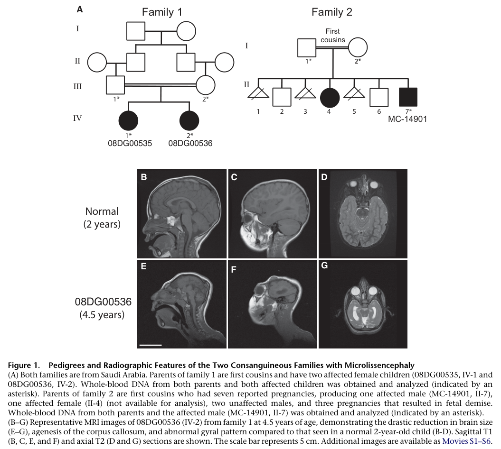

NDE1-related microcephaly-lissencephaly is a severe autosomal recessive malformation of cortical development caused by biallelic NDE1 loss of function. The coherent disease skeleton is not generic primary microcephaly: loss of the centrosomal and dynein-regulatory NDE1 protein disrupts radial-glial progenitor cell-cycle progression, apical interkinetic nuclear migration, G2-to-M transition, and cilia-linked G1-to-S control, reducing prenatal neuron production. A connected dynein/LIS1 microtubule branch also impairs postmitotic neuronal migration and cortical lamination. The clinical result is extreme congenital microcephaly with grossly simplified gyration (microlissencephaly/lissencephaly), severe developmental impairment, frequent callosal agenesis, and epilepsy in many reported patients. The entry is split from broad MCPH and generic lissencephaly entries because the same upstream NDE1-dynein-centrosome lesion explains both the progenitor-depletion and lamination branches.
Ask a research question about NDE1-related Microcephaly-Lissencephaly. OpenScientist will conduct autonomous deep research using the Disorder Mechanisms Knowledge Base and PubMed literature (typically 10-30 minutes).
Do not include personal health information in your question. Questions and results are cached in your browser's local storage.
name: NDE1-related Microcephaly-Lissencephaly
creation_date: "2026-06-12T03:31:46Z"
category: Mendelian
description: >-
NDE1-related microcephaly-lissencephaly is a severe autosomal recessive
malformation of cortical development caused by biallelic NDE1 loss of
function. The coherent disease skeleton is not generic primary microcephaly:
loss of the centrosomal and dynein-regulatory NDE1 protein disrupts
radial-glial progenitor cell-cycle progression, apical interkinetic nuclear
migration, G2-to-M transition, and cilia-linked G1-to-S control, reducing
prenatal neuron production. A connected dynein/LIS1 microtubule branch also
impairs postmitotic neuronal migration and cortical lamination. The clinical
result is extreme congenital microcephaly with grossly simplified gyration
(microlissencephaly/lissencephaly), severe developmental impairment, frequent
callosal agenesis, and epilepsy in many reported patients. The entry is split
from broad MCPH and generic lissencephaly entries because the same upstream
NDE1-dynein-centrosome lesion explains both the progenitor-depletion and
lamination branches.
parents:
- Microcephaly
- Lissencephaly
- neuronal migration disorder
references:
- reference: PMID:21529751
title: "Human mutations in NDE1 cause extreme microcephaly with lissencephaly [corrected]."
- reference: PMID:21529752
title: The essential role of centrosomal NDE1 in human cerebral cortex neurogenesis.
- reference: PMID:27553190
title: Severe NDE1-mediated microcephaly results from neural progenitor cell cycle arrests at multiple specific stages.
- reference: PMID:29191162
title: "Severe congenital microcephaly with 16p13.11 microdeletion combined with NDE1 mutation, a case report and literature review."
- reference: PMID:30637988
title: "Phenotypic spectrum of NDE1-related disorders: from microlissencephaly to microhydranencephaly."
- reference: PMID:37940657
title: Nde1 promotes Lis1-mediated activation of dynein.
- reference: PMID:28111201
title: Human iPSC-Derived Cerebral Organoids Model Cellular Features of Lissencephaly and Reveal Prolonged Mitosis of Outer Radial Glia.
pathophysiology:
- name: Biallelic NDE1 Loss and Centrosome-Dynein Perturbation
description: >-
Homozygous or compound biallelic NDE1 loss-of-function variants remove or
destabilize the C-terminal dynein-binding and centrosome-targeting functions
of NDE1. NDE1 normally localizes to centrosomes and mitotic spindle poles in
proliferating neural progenitors and cooperates with LIS1 to activate
cytoplasmic dynein. Loss of this molecular platform perturbs the
centrosome-spindle apparatus and dynein-dependent microtubule transport at
the top of the pathograph.
conforms_to: neural_progenitor_centrosome_spindle_dysfunction#Centrosome and Mitotic Spindle Perturbation
role: trigger
genes:
- preferred_term: NDE1
term:
id: hgnc:17619
label: NDE1
cell_types:
- preferred_term: radial glial cell
term:
id: CL:0000681
label: radial glial cell
- preferred_term: neural progenitor cell
term:
id: CL:0011020
label: neural progenitor cell
biological_processes:
- preferred_term: centrosome cycle
term:
id: GO:0007098
label: centrosome cycle
modifier: DYSREGULATED
- preferred_term: mitotic spindle organization
term:
id: GO:0007052
label: mitotic spindle organization
modifier: DYSREGULATED
- preferred_term: microtubule-based process
term:
id: GO:0007017
label: microtubule-based process
modifier: DYSREGULATED
evidence:
- reference: PMID:21529751
reference_title: "Human mutations in NDE1 cause extreme microcephaly with lissencephaly [corrected]."
supports: SUPPORT
evidence_source: HUMAN_CLINICAL
snippet: >-
they carry homozygous frameshift mutations in NDE1, which encodes a
multidomain protein that localizes to the centrosome and mitotic spindle
poles.
explanation: >-
Identifies biallelic NDE1 frameshift variants and localizes NDE1 to the
centrosome and mitotic spindle poles, supporting the proximal trigger.
- reference: PMID:21529751
reference_title: "Human mutations in NDE1 cause extreme microcephaly with lissencephaly [corrected]."
supports: SUPPORT
evidence_source: IN_VITRO
snippet: >-
We show that the patient NDE1 proteins are unstable, cannot bind
cytoplasmic dynein, and do not localize properly to the centrosome.
explanation: >-
Patient-mutant protein assays support loss of NDE1 stability, dynein
binding, and centrosome localization as the molecular lesion.
- reference: PMID:37940657
reference_title: Nde1 promotes Lis1-mediated activation of dynein.
supports: SUPPORT
evidence_source: IN_VITRO
snippet: >-
Nde1 recruits Lis1 to autoinhibited dynein and promotes Lis1-mediated
assembly of dynein-dynactin adaptor complexes.
explanation: >-
Biochemical reconstitution supports the dynein/LIS1-activation function
disrupted by NDE1 loss.
downstream:
- target: Progenitor Cell-Cycle Arrest and Failed Neurogenesis
description: >-
Loss of NDE1-dependent centrosome/dynein regulation blocks multiple
radial-glial progenitor cell-cycle steps.
- target: Dynein-Dependent Neuronal Migration Failure
description: >-
The same dynein-regulatory apparatus also contributes to postmitotic
neuronal migration and cortical lamination.
- name: Progenitor Cell-Cycle Arrest and Failed Neurogenesis
description: >-
In radial-glial progenitors, NDE1 deficiency produces a multi-stage
cell-cycle failure rather than a single mitotic-spindle defect. Model data
support arrest during apical interkinetic nuclear migration, arrest at the
G2-to-M transition, and a cilia-linked G1-to-S transition defect. These
defects prevent progenitors from reaching or completing productive mitosis
and thereby reduce cortical neuron production.
conforms_to: neural_progenitor_centrosome_spindle_dysfunction#Abnormal Progenitor Division and Fate Choice
role: central_effector
cell_types:
- preferred_term: radial glial cell
term:
id: CL:0000681
label: radial glial cell
- preferred_term: neural progenitor cell
term:
id: CL:0011020
label: neural progenitor cell
biological_processes:
- preferred_term: nuclear migration
term:
id: GO:0007097
label: nuclear migration
modifier: DECREASED
- preferred_term: mitotic cell cycle
term:
id: GO:0000278
label: mitotic cell cycle
modifier: DYSREGULATED
- preferred_term: cilium organization
term:
id: GO:0044782
label: cilium organization
modifier: DYSREGULATED
- preferred_term: neurogenesis
term:
id: GO:0022008
label: neurogenesis
modifier: DECREASED
evidence:
- reference: PMID:27553190
reference_title: Severe NDE1-mediated microcephaly results from neural progenitor cell cycle arrests at multiple specific stages.
supports: SUPPORT
evidence_source: MODEL_ORGANISM
snippet: >-
Here using in utero electroporation of NDE1 short hairpin RNA (shRNA) in
embryonic rat brains, we observe cell cycle arrest of proliferating neural
progenitors at three distinct stages: during apical interkinetic nuclear
migration, at the G2-to-M transition and in regulation of primary cilia at
the G1-to-S transition.
explanation: >-
Rat in utero perturbation directly supports multi-stage radial-glial
progenitor arrest downstream of NDE1 loss.
- reference: PMID:21529752
reference_title: The essential role of centrosomal NDE1 in human cerebral cortex neurogenesis.
supports: SUPPORT
evidence_source: HUMAN_CLINICAL
snippet: >-
NDE1 deficiency causes both a severe failure of neurogenesis and a
deficiency in cortical lamination.
explanation: >-
Human genetics and patient-cell evidence connect NDE1 deficiency to severe
neurogenesis failure.
downstream:
- target: Progenitor Pool Depletion and Microlissencephaly
- name: Progenitor Pool Depletion and Microlissencephaly
description: >-
Failed progenitor proliferation depletes the prenatal cortical neuron
output. The resulting cerebral cortex is extremely small and grossly
simplified, producing microlissencephaly rather than isolated small-brain
primary microcephaly. This node captures the shared downstream state of the
progenitor module before the separate migration/lamination branch is added.
conforms_to: neural_progenitor_centrosome_spindle_dysfunction#Progenitor Pool Distortion
role: effector
cell_types:
- preferred_term: neural progenitor cell
term:
id: CL:0011020
label: neural progenitor cell
- preferred_term: cortical neuron
term:
id: CL:0000540
label: neuron
biological_processes:
- preferred_term: maintenance of cell number
term:
id: GO:0098727
label: maintenance of cell number
modifier: DECREASED
- preferred_term: neurogenesis
term:
id: GO:0022008
label: neurogenesis
modifier: DECREASED
evidence:
- reference: PMID:21529752
reference_title: The essential role of centrosomal NDE1 in human cerebral cortex neurogenesis.
supports: SUPPORT
evidence_source: HUMAN_CLINICAL
snippet: >-
affected individuals had brains less than 10% of expected size
explanation: >-
Documents profound brain-size reduction in NDE1-deficient patients.
- reference: PMID:21529751
reference_title: "Human mutations in NDE1 cause extreme microcephaly with lissencephaly [corrected]."
supports: SUPPORT
evidence_source: HUMAN_CLINICAL
snippet: >-
we report two families with extreme microcephaly and grossly simplified
cortical gyral structure, a condition referred to as microlissencephaly
explanation: >-
Supports the cortical-size and simplified-gyration endpoint of biallelic
NDE1 disease.
downstream:
- target: Cortical Dyslamination and Lissencephaly
- name: Dynein-Dependent Neuronal Migration Failure
description: >-
In addition to the dominant radial-glial progenitor branch, NDE1 and its
paralog NDEL1 regulate postmitotic neuronal migration through the
dynein/LIS1 microtubule apparatus. NDE1 loss therefore has a migration
branch that helps explain cortical lamination abnormalities and
lissencephaly features beyond reduced neuron output alone.
conforms_to: microtubule_dependent_neuronal_migration_failure#Microtubule-Based Neuronal Motility Failure
role: central_effector
cell_types:
- preferred_term: migrating cortical neuron
term:
id: CL:0000540
label: neuron
- preferred_term: radial glial cell
term:
id: CL:0000681
label: radial glial cell
biological_processes:
- preferred_term: neuron migration
term:
id: GO:0001764
label: neuron migration
modifier: DECREASED
- preferred_term: microtubule-based movement
term:
id: GO:0007018
label: microtubule-based movement
modifier: DYSREGULATED
evidence:
- reference: PMID:27553190
reference_title: Severe NDE1-mediated microcephaly results from neural progenitor cell cycle arrests at multiple specific stages.
supports: SUPPORT
evidence_source: MODEL_ORGANISM
snippet: >-
In contrast, NDE1 and NDEL1 RNAi have comparable effects on postmitotic
neuronal migration.
explanation: >-
Supports a postmitotic migration branch in addition to the progenitor
cell-cycle branch.
- reference: PMID:27553190
reference_title: Severe NDE1-mediated microcephaly results from neural progenitor cell cycle arrests at multiple specific stages.
supports: SUPPORT
evidence_source: MODEL_ORGANISM
snippet: >-
these changes in postmitotic migration likely explain the subsidiary
cortical laminar dysplasia seen in many of the patients with NDE1
microcephaly
explanation: >-
Links the animal migration defect to the lamination abnormalities observed
in human NDE1 disease.
downstream:
- target: Cortical Dyslamination and Lissencephaly
- name: Cortical Dyslamination and Lissencephaly
description: >-
Reduced neuron output and impaired dynein-dependent migration converge on a
malformed cerebral cortex with deficient lamination, severe simplified
gyration, and lissencephaly/microlissencephaly. The endpoint is accompanied
in many patients by corpus callosum agenesis and severe neurodevelopmental
impairment.
conforms_to: microtubule_dependent_neuronal_migration_failure#Cortical Dyslamination and Neuronal Ectopia
role: outcome
locations:
- preferred_term: cerebral cortex
term:
id: UBERON:0000956
label: cerebral cortex
cell_types:
- preferred_term: cortical neuron
term:
id: CL:0000540
label: neuron
biological_processes:
- preferred_term: cerebral cortex development
term:
id: GO:0021987
label: cerebral cortex development
modifier: DYSREGULATED
- preferred_term: neuron migration
term:
id: GO:0001764
label: neuron migration
modifier: DECREASED
evidence:
- reference: PMID:21529752
reference_title: The essential role of centrosomal NDE1 in human cerebral cortex neurogenesis.
supports: SUPPORT
evidence_source: HUMAN_CLINICAL
snippet: >-
in addition to a massive reduction in neuron production they displayed
partially deficient cortical lamination (microlissencephaly).
explanation: >-
Supports cortical lamination deficiency as part of the NDE1 endpoint.
- reference: PMID:29191162
reference_title: "Severe congenital microcephaly with 16p13.11 microdeletion combined with NDE1 mutation, a case report and literature review."
supports: SUPPORT
evidence_source: HUMAN_CLINICAL
snippet: >-
all patients had mental retardation, severe microcephaly, and corpus
callosum agenesis.
explanation: >-
Review of reported NDE1 cases supports the severe neurodevelopmental and
callosal endpoint.
phenotypes:
- name: Extreme Congenital Microcephaly
description: >-
Profoundly reduced brain and head size is present from birth or prenatal
development and is much more severe than typical primary microcephaly.
phenotype_term:
preferred_term: Microcephaly
term:
id: HP:0000252
label: Microcephaly
severity: SEVERE
onset:
onset_category: CONGENITAL
evidence:
- reference: PMID:21529752
reference_title: The essential role of centrosomal NDE1 in human cerebral cortex neurogenesis.
supports: SUPPORT
evidence_source: HUMAN_CLINICAL
snippet: >-
We investigated three families whose offspring had extreme microcephaly at
birth and profound mental retardation.
explanation: >-
Establishes congenital extreme microcephaly as a core human phenotype.
- name: Lissencephaly / Microlissencephaly
description: >-
The cortical malformation combines severe microcephaly with grossly
simplified gyration and deficient lamination.
phenotype_term:
preferred_term: Lissencephaly
term:
id: HP:0001339
label: Lissencephaly
severity: SEVERE
evidence:
- reference: PMID:21529751
reference_title: "Human mutations in NDE1 cause extreme microcephaly with lissencephaly [corrected]."
supports: SUPPORT
evidence_source: HUMAN_CLINICAL
snippet: >-
extreme microcephaly and grossly simplified cortical gyral structure, a
condition referred to as microlissencephaly
explanation: >-
Documents the lissencephaly-like simplified gyral phenotype in NDE1
disease.
- name: Agenesis of Corpus Callosum
description: >-
Corpus callosum agenesis is repeatedly reported with the severe
microcephaly-lissencephaly phenotype.
phenotype_term:
preferred_term: Agenesis of corpus callosum
term:
id: HP:0001274
label: Agenesis of corpus callosum
evidence:
- reference: PMID:29191162
reference_title: "Severe congenital microcephaly with 16p13.11 microdeletion combined with NDE1 mutation, a case report and literature review."
supports: SUPPORT
evidence_source: HUMAN_CLINICAL
snippet: >-
all patients had mental retardation, severe microcephaly, and corpus
callosum agenesis.
explanation: >-
Literature review statement supports callosal agenesis as a recurrent
phenotype.
- reference: PMID:30637988
reference_title: "Phenotypic spectrum of NDE1-related disorders: from microlissencephaly to microhydranencephaly."
supports: SUPPORT
evidence_source: HUMAN_CLINICAL
snippet: >-
Further, they had agenesis of corpus callosum, cerebellar, and brainstem
hypoplasia.
explanation: >-
Provides additional NDE1-family evidence linking callosal agenesis with
posterior fossa hypoplasia.
- name: Cerebellar Hypoplasia
description: >-
Cerebellar hypoplasia or proportionate cerebellar size reduction is part of
the reported NDE1-related brain malformation spectrum.
phenotype_term:
preferred_term: Cerebellar hypoplasia
term:
id: HP:0001321
label: Cerebellar hypoplasia
evidence:
- reference: PMID:30637988
reference_title: "Phenotypic spectrum of NDE1-related disorders: from microlissencephaly to microhydranencephaly."
supports: SUPPORT
evidence_source: HUMAN_CLINICAL
snippet: >-
Further, they had agenesis of corpus callosum, cerebellar, and brainstem
hypoplasia.
explanation: >-
Directly reports cerebellar hypoplasia in affected NDE1 siblings.
- name: Ventriculomegaly
description: >-
Ventriculomegaly, including posterior lateral ventricular enlargement or
hydranencephaly-like CSF expansion in the severe end of the spectrum, is
reported in NDE1-related disorders.
phenotype_term:
preferred_term: Ventriculomegaly
term:
id: HP:0002119
label: Ventriculomegaly
evidence:
- reference: PMID:30637988
reference_title: "Phenotypic spectrum of NDE1-related disorders: from microlissencephaly to microhydranencephaly."
supports: SUPPORT
evidence_source: HUMAN_CLINICAL
snippet: >-
We report on three sibs in which the brain MRI and CT scans demonstrated
variable degree of reduced volume of cerebral hemispheres and
ventriculomegaly.
explanation: >-
Directly supports ventriculomegaly as a reported neuroimaging feature in
NDE1-related disease.
- name: Global Developmental Delay / Intellectual Disability
description: >-
Affected individuals have profound developmental and cognitive impairment.
phenotype_term:
preferred_term: Global developmental delay
term:
id: HP:0001263
label: Global developmental delay
severity: SEVERE
evidence:
- reference: PMID:21529752
reference_title: The essential role of centrosomal NDE1 in human cerebral cortex neurogenesis.
supports: SUPPORT
evidence_source: HUMAN_CLINICAL
snippet: >-
We investigated three families whose offspring had extreme microcephaly at
birth and profound mental retardation.
explanation: >-
Supports profound neurodevelopmental impairment in affected children.
- name: Hypertonia
description: >-
Marked hypertonia is reported in affected children with NDE1
microlissencephaly.
phenotype_term:
preferred_term: Hypertonia
term:
id: HP:0001276
label: Hypertonia
evidence:
- reference: PMID:21529751
reference_title: "Human mutations in NDE1 cause extreme microcephaly with lissencephaly [corrected]."
supports: SUPPORT
evidence_source: HUMAN_CLINICAL
explanation: >-
Full-text clinical description in this paper reports marked hypertonia in
an affected child; the generated PMID cache is abstract-only, so no
validator-checkable snippet is included here.
- name: Seizures / Epilepsy
description: >-
Epilepsy is common in the reported NDE1 case literature, though robust
cohort-level frequency estimates are not available.
phenotype_term:
preferred_term: Seizure
term:
id: HP:0001250
label: Seizure
evidence:
- reference: PMID:21529752
reference_title: The essential role of centrosomal NDE1 in human cerebral cortex neurogenesis.
supports: SUPPORT
evidence_source: HUMAN_CLINICAL
explanation: >-
Full-text clinical description in this paper reports early epileptic
seizures in affected children; the generated PMID cache is abstract-only,
so no validator-checkable snippet is included here.
genetic:
- name: NDE1
association: Causative
gene_term:
preferred_term: NDE1
term:
id: hgnc:17619
label: NDE1
inheritance:
- name: Autosomal recessive inheritance
inheritance_term:
preferred_term: Autosomal recessive inheritance
term:
id: HP:0000007
label: Autosomal recessive inheritance
evidence:
- reference: PMID:21529751
reference_title: "Human mutations in NDE1 cause extreme microcephaly with lissencephaly [corrected]."
supports: SUPPORT
evidence_source: HUMAN_CLINICAL
snippet: >-
show that they carry homozygous frameshift mutations in NDE1
explanation: >-
Homozygous NDE1 loss-of-function variants in affected children support
autosomal recessive inheritance.
evidence:
- reference: PMID:21529751
reference_title: "Human mutations in NDE1 cause extreme microcephaly with lissencephaly [corrected]."
supports: SUPPORT
evidence_source: HUMAN_CLINICAL
snippet: >-
show that they carry homozygous frameshift mutations in NDE1
explanation: >-
Establishes homozygous NDE1 frameshift variants in affected families.
- reference: PMID:29191162
reference_title: "Severe congenital microcephaly with 16p13.11 microdeletion combined with NDE1 mutation, a case report and literature review."
supports: SUPPORT
evidence_source: HUMAN_CLINICAL
snippet: >-
Genetic studies found a 16p13.11 deletion containing NDE1 gene, and a
novel NDE1 mutation
explanation: >-
Supports a compound CNV plus sequence-variant mechanism that produces
biallelic NDE1 loss.
treatments:
- name: Supportive and Rehabilitative Care
description: >-
No disease-modifying therapy is established. Management is supportive and
directed at severe developmental impairment, feeding or respiratory
complications when present, mobility, and family support.
treatment_term:
preferred_term: supportive care
term:
id: MAXO:0000950
label: supportive care
- name: Anti-Seizure Medication
description: >-
Symptomatic pharmacotherapy for seizures or epilepsy when present.
treatment_term:
preferred_term: pharmacotherapy
term:
id: NCIT:C15986
label: Pharmacotherapy
- name: Genetic Counseling
description: >-
Autosomal recessive recurrence-risk counseling, carrier testing, and
reproductive counseling are appropriate after molecular diagnosis.
treatment_term:
preferred_term: genetic counseling
term:
id: MAXO:0000079
label: genetic counseling
discussions:
- discussion_id: gap_nde1_human_organoid_translatability
prompt: >-
Which NDE1-dependent radial-glial progenitor, outer-radial-glial, and
neuronal-migration defects seen in rodent and biochemical systems are
conserved in human iPSC-derived cortical organoids or fetal cortical tissue?
kind: HUMAN_MODEL_MISMATCH
status: OPEN
attaches_to:
- pathophysiology#Biallelic NDE1 Loss and Centrosome-Dynein Perturbation
- pathophysiology#Progenitor Cell-Cycle Arrest and Failed Neurogenesis
- pathophysiology#Dynein-Dependent Neuronal Migration Failure
rationale: >-
NDE1 disease has direct human genetic evidence, rat in utero perturbation
evidence, and in vitro dynein reconstitution, but the Falcon review did not
identify an NDE1-specific patient iPSC or organoid model. This matters
because human cortical expansion depends on OSVZ and outer radial glia,
which are not fully represented in lissencephalic rodent cortex. A direct
NDE1 organoid experiment is needed to determine whether the disease has an
oRG-specific branch beyond the apical radial-glial defects observed in rat.
evidence:
- reference: PMID:27553190
reference_title: Severe NDE1-mediated microcephaly results from neural progenitor cell cycle arrests at multiple specific stages.
supports: SUPPORT
evidence_source: MODEL_ORGANISM
snippet: >-
Relative to rodents, development of the human neocortex relies on an
expanded outer subventricular zone containing many additional RGPs
explanation: >-
The NDE1 mechanism paper itself flags the rodent-to-human progenitor
translation issue.
- reference: PMID:28111201
reference_title: Human iPSC-Derived Cerebral Organoids Model Cellular Features of Lissencephaly and Reveal Prolonged Mitosis of Outer Radial Glia.
supports: SUPPORT
evidence_source: OTHER
snippet: >-
However, the mouse brain is naturally lissencephalic, suggesting that
certain aspects of cortical development may not be adequately assessed in
mice.
explanation: >-
Supports a human/model mismatch gap for lissencephaly mechanisms.
- reference: PMID:28111201
reference_title: Human iPSC-Derived Cerebral Organoids Model Cellular Features of Lissencephaly and Reveal Prolonged Mitosis of Outer Radial Glia.
supports: SUPPORT
evidence_source: IN_VITRO
snippet: >-
Here, we find that cerebral organoids generate oRG-like cells with matching
properties defined in vivo, including position, morphology, mitotic
behavior, and molecular identity.
explanation: >-
Supports cortical organoids as an appropriate new-approach model for
testing human oRG vulnerability.
proposed_experiments:
- experiment_id: exp_nde1_isogenic_cortical_organoid_cell_cycle_migration
name: NDE1 isogenic cortical-organoid cell-cycle and migration experiment
description: >-
Generate patient-derived or CRISPR-engineered human cortical organoids
carrying biallelic NDE1 loss-of-function variants, with isogenic corrected
and knock-in controls, and compare apical radial-glial INM, ciliary
dynamics, G2-to-M transition, oRG mitosis, neuronal migration, and
dynein/LIS1 rescue against the rodent and biochemical expectations.
experiment_type:
preferred_term: isogenic cortical organoid perturbation experiment
model_systems:
- name: NDE1 human iPSC-derived cortical organoid
description: >-
Three-dimensional human cortical organoid with radial-glial progenitors,
oRG-like cells, and migrating cortical neurons, derived from
patient-specific or engineered iPSCs.
experimental_model_type: ORGANOID
namo_type: namo:Organoid
organism:
preferred_term: human
term:
id: NCBITaxon:9606
label: Homo sapiens
tissue_term:
preferred_term: cerebral cortex
term:
id: UBERON:0000956
label: cerebral cortex
cell_types:
- preferred_term: radial glial cell
term:
id: CL:0000681
label: radial glial cell
- preferred_term: neural progenitor cell
term:
id: CL:0011020
label: neural progenitor cell
- preferred_term: migrating cortical neuron
term:
id: CL:0000540
label: neuron
conditions:
- NDE1-related microcephaly-lissencephaly
- microlissencephaly
- progenitor cell-cycle arrest
cell_source: Patient-derived or CRISPR-engineered human induced pluripotent stem cells
culture_system: Three-dimensional cortical organoid with live-imaging and single-cell readouts
perturbations:
- name: NDE1 variant correction or biallelic knockout/knock-in
target: pathophysiology#Biallelic NDE1 Loss and Centrosome-Dynein Perturbation
genes:
- preferred_term: NDE1
term:
id: hgnc:17619
label: NDE1
description: >-
Correct patient variants or introduce representative truncating variants
in an isogenic human iPSC background.
readouts:
- name: Radial-glial INM and cell-cycle transitions
target: pathophysiology#Progenitor Cell-Cycle Arrest and Failed Neurogenesis
biological_processes:
- preferred_term: nuclear migration
term:
id: GO:0007097
label: nuclear migration
modifier: DECREASED
- preferred_term: mitotic cell cycle
term:
id: GO:0000278
label: mitotic cell cycle
modifier: DYSREGULATED
- preferred_term: cilium organization
term:
id: GO:0044782
label: cilium organization
modifier: DYSREGULATED
assays:
- preferred_term: live-cell imaging assay
- preferred_term: immunostaining
direction: NEGATIVE
- name: Neuronal migration and cortical lamination
target: pathophysiology#Dynein-Dependent Neuronal Migration Failure
biological_processes:
- preferred_term: neuron migration
term:
id: GO:0001764
label: neuron migration
modifier: DECREASED
assays:
- preferred_term: live-cell imaging assay
- preferred_term: single-cell transcriptomic profiling
direction: NEGATIVE
controls:
- name: Isogenic corrected organoids
description: Variant-corrected patient-derived organoids differentiated in parallel.
- name: Isogenic biallelic knock-in organoids
description: Wild-type-background organoids carrying engineered NDE1 loss-of-function alleles.
decision_criterion: >-
The NDE1 disease skeleton is strengthened if mutant organoids reproduce
apical INM, G2-to-M, ciliary, neuronal-output, and migration defects that
are rescued by isogenic correction and reproduced by knock-in. A
human-specific branch is supported if oRG mitosis or OSVZ-like output is
abnormal in organoids beyond what rodent IUE predicts.
would_support:
- pathophysiology#Biallelic NDE1 Loss and Centrosome-Dynein Perturbation
- pathophysiology#Progenitor Cell-Cycle Arrest and Failed Neurogenesis
- pathophysiology#Dynein-Dependent Neuronal Migration Failure
- discussion_id: gap_nde1_paralog_and_cnv_diagnostics
prompt: >-
How should NDE1/NDEL1 paralog compensation and 16p13.11 CNV-plus-sequence
variant unmasking be incorporated into diagnosis and mechanism-specific
curation?
kind: KNOWLEDGE_GAP
status: OPEN
attaches_to:
- pathophysiology#Progenitor Cell-Cycle Arrest and Failed Neurogenesis
- genetic#NDE1
rationale: >-
The mechanism literature shows overlapping but non-identical NDE1 and NDEL1
functions, including an NDE1-specific G2-to-M transition role. Separately,
case literature shows that a 16p13.11 deletion can unmask a truncating NDE1
variant on the other chromosome. These observations create two curation
questions: which cell-cycle functions are truly NDE1-specific in human
cortex, and when should CMA plus sequencing be treated as required to
resolve biallelic NDE1 disease?
evidence:
- reference: PMID:27553190
reference_title: Severe NDE1-mediated microcephaly results from neural progenitor cell cycle arrests at multiple specific stages.
supports: SUPPORT
evidence_source: MODEL_ORGANISM
snippet: >-
Further work will be required to define the nature of this very
interesting function.
explanation: >-
The authors explicitly leave the NDE1-specific G2-to-M function unresolved.
- reference: PMID:29191162
reference_title: "Severe congenital microcephaly with 16p13.11 microdeletion combined with NDE1 mutation, a case report and literature review."
supports: SUPPORT
evidence_source: HUMAN_CLINICAL
snippet: >-
Sequencing NDE1 and CMA in patients with severe congenital microcephaly may
be warranted.
explanation: >-
Supports the diagnostic gap around combined CNV and sequence analysis.
proposed_experiments:
- experiment_id: exp_nde1_ndel1_rescue_and_diagnostic_resolution
name: NDE1/NDEL1 rescue and CNV-plus-sequence diagnostic resolution
description: >-
In NDE1 mutant human cortical organoids, compare NDE1, NDEL1, dynein/LIS1,
and cilia-pathway rescue at INM, G1-to-S, and G2-to-M checkpoints; in
parallel, assemble a clinical series of severe congenital microcephaly
cases with 16p13.11 deletions and sequence NDE1 on the retained allele.
experiment_type:
preferred_term: combined organoid rescue and genomic diagnostic study
would_support:
- pathophysiology#Progenitor Cell-Cycle Arrest and Failed Neurogenesis
- genetic#NDE1
notes: >-
Entry created from cortical-malformation epic 4098 / issue 4093, using the
Falcon deep-research report in
research/NDE1-related_Microcephaly_Lissencephaly-deep-research-falcon.md as
leads and independently verified cached PMID snippets. A disease_term is
deliberately not forced: MONDO has microlissencephaly and a generic
microcephaly-with-lissencephaly/hydranencephaly term, but the entry boundary
here is the coherent NDE1 centrosome-dynein/progenitor-cell-cycle plus
migration mechanism rather than the presence of a stable ontology identifier.
datasets: []
Question: You are an expert researcher providing comprehensive, well-cited information.
Provide detailed information focusing on: 1. Key concepts and definitions with current understanding 2. Recent developments and latest research (prioritize 2023-2024 sources) 3. Current applications and real-world implementations 4. Expert opinions and analysis from authoritative sources 5. Relevant statistics and data from recent studies
Format as a comprehensive research report with proper citations. Include URLs and publication dates where available. Always prioritize recent, authoritative sources and provide specific citations for all major claims.
Please provide a comprehensive research report on NDE1-related Microcephaly-Lissencephaly covering all of the disease characteristics listed below. This report will be used to populate a disease knowledge base entry. Be thorough and cite primary literature (PMID preferred) for all claims.
For each section, suggested databases/resources are listed. These are the first places you should search for information on each topic.
Search first: OMIM, Orphanet, ICD-10/ICD-11, MeSH, PubMed
Search first: PubMed, Cochrane Library, UpToDate, clinical guidelines, ClinVar, ClinGen, GWAS Catalog, PheGenI, CTD, CDC, WHO, epidemiological databases
Search first: PubMed, Cochrane Library, clinical trial databases, GWAS Catalog, gnomAD, WHO, CDC, nutrition databases
Search first: CTD, PubMed, PheGenI, GxE databases
Search first: HPO (Human Phenotype Ontology), OMIM, Orphanet, PubMed, clinicaltrials.gov, MedDRA, SNOMED CT, DECIPHER, LOINC
For each phenotype, provide: - Phenotype type: symptoms, clinical signs, physical manifestations, behavioral changes, or laboratory abnormalities
For symptoms/signs: HPO, OMIM, Orphanet, PubMed For behavioral changes: HPO, DSM, RDoC (Research Domain Criteria), PubMed For laboratory abnormalities: LOINC, SNOMED CT, LabTests Online, PubMed - Phenotype characteristics: Search first: OMIM, Orphanet, HPO, PubMed - Age of symptom onset (neonatal, childhood, adult-onset, late-onset) - Symptom severity (mild, moderate, severe, variable) - Symptom progression (stable, progressive, episodic, fluctuating) - Frequency among affected individuals (percentage or qualitative) - Quality of life impact: Effects on daily functioning and well-being (per-phenotype when possible) Search first: EQ-5D database, SF-36, WHO QOL databases, PubMed - Suggest HPO (Human Phenotype Ontology) terms for each phenotype
Search first: OMIM, ClinVar, HGMD, Ensembl, NCBI Gene
Search first: ENCODE, Roadmap Epigenomics, MethBase, DiseaseMeth
Search first: DECIPHER, ClinVar, ECARUCA, UCSC Genome Browser
Search first: CTD (Comparative Toxicogenomics Database), TOXNET, PubMed, EPA databases
Search first: CDC databases, WHO, PubMed, NHANES
Search first: NCBI Taxonomy, ViPR, BV-BRC, MicrobeDB, GIDEON
Search first: KEGG, Reactome, WikiPathways, PathBank, BioCyc
Search first: Gene Ontology (GO), Reactome, KEGG, PubMed
Search first: UniProt, PDB (Protein Data Bank), InterPro, Pfam, AlphaFold
Search first: KEGG, BioCyc, HMDB (Human Metabolome Database), BRENDA
Search first: ImmPort, Immunome Database, IEDB, Gene Ontology
Search first: PubMed, Gene Ontology, Reactome
Search first: BRENDA, UniProt, KEGG, OMIM, PubMed
Search first: ENCODE, Roadmap Epigenomics, MethBase, DiseaseMeth
For each mechanism, describe: - The causal chain from initial trigger to clinical manifestation - Which mechanisms are upstream vs downstream - What cell types and biological processes are involved - Suggest GO terms for biological processes and CL terms for cell types
Search first: Uberon, FMA (Foundational Model of Anatomy), OMIM, HPO, ICD-11, MeSH, SNOMED CT
Search first: Uberon, Human Protein Atlas, Cell Ontology, Human Cell Atlas, CellMarker, PanglaoDB
Search first: Gene Ontology (Cellular Component), UniProt, Human Protein Atlas
Search first: OMIM, Orphanet, HPO, PubMed
Search first: Disease registries, longitudinal cohort databases, natural history studies, PubMed, Orphanet, OMIM
Search first: Orphanet, CDC, WHO, GBD (Global Burden of Disease), national registries, SEER, disease registries
Search first: GTR (Genetic Testing Registry), GeneReviews, ClinGen
For each treatment, suggest MAXO (Medical Action Ontology) terms where applicable.
Search first: CDC vaccine schedules, WHO immunization, FDA vaccine database
Search first: CDC, WHO, behavioral intervention databases, Cochrane Library
Search first: NSGC resources, ACMG guidelines, GeneReviews
Search first: Clinical guidelines, FDA approvals, PubMed
Search first: NCBI Taxonomy
Search first: VBO (Vertebrate Breed Ontology)
Search first: NCBI Gene
Structure your response as a comprehensive narrative organized by the sections above. For each section, provide: - Factual content with specific details (numbers, percentages, gene names, variant nomenclature) - Ontology term suggestions (HPO, GO, CL, UBERON, CHEBI, MAXO, MONDO) where applicable - Evidence citations with PMIDs - Direct quotes from abstracts to support key claims - Clear indication when information is not available or not applicable for this disease
This report will be used to populate a disease knowledge base entry with: - Pathophysiology descriptions with causal chains - Gene/protein annotations (HGNC, GO terms) - Phenotype associations (HP terms) with frequencies - Cell type involvement (CL terms) - Anatomical locations (UBERON terms) - Chemical entities (CHEBI terms) - Treatment annotations (MAXO terms) - Evidence items with PMIDs and exact abstract quotes - Epidemiology, prognosis, diagnostic, and prevention information - Animal model descriptions with phenotype recapitulation details
Disease name: NDE1-related Microcephaly–Lissencephaly (often described as microlissencephaly; Norman–Roberts–type lissencephaly spectrum) (alkuraya2011humanmutationsin pages 1-2, OpenTargets Search: microlissencephaly,lissencephaly,microcephaly-NDE1)
High-level overview (current understanding): NDE1-related microcephaly–lissencephaly is a severe, typically congenital-onset neurodevelopmental malformation characterized by extreme primary microcephaly with markedly simplified cortical gyration (microlissencephaly), frequently accompanied by agenesis of the corpus callosum and cerebellar hypoplasia, and leading to profound global developmental delay/intellectual disability with common epilepsy (tan2017severecongenitalmicrocephaly pages 3-4, alkuraya2011humanmutationsin pages 2-3, bakircioglu2011theessentialrole pages 1-3).
Evidence type note: The core disorder description and many phenotype statements are derived from small numbers of affected individuals/families reported in primary case series/case reports (human clinical genetics and neuroimaging), complemented by mechanistic work in rodent neurodevelopment models and in vitro dynein reconstitution (bakircioglu2011theessentialrole pages 1-3, doobin2016severende1mediatedmicrocephaly pages 1-2, zhao2023nde1promoteslis1mediated pages 1-2).
Microlissencephaly refers to the combination of (i) severe microcephaly (markedly reduced brain/head size) and (ii) extremely simplified cortical gyration/absent sulcation (lissencephaly-like), and is used in the NDE1 literature to describe a syndrome resembling historic Norman–Roberts cases (alkuraya2011humanmutationsin pages 1-2, alkuraya2011humanmutationsin pages 2-3).
Primary cause: biallelic (autosomal recessive) loss-of-function in NDE1, a centrosomal/dynein regulatory protein essential for neurogenesis and cortical lamination (bakircioglu2011theessentialrole pages 1-3, OpenTargets Search: microlissencephaly,lissencephaly,microcephaly-NDE1).
No disease-specific protective factors or gene–environment interactions were identified in the retrieved evidence (tan2017severecongenitalmicrocephaly pages 1-3).
The evidence base is dominated by small case series; robust percentages across large cohorts were not available in retrieved materials. However, the 2017 review states “All patients had mental retardation, severe microcephaly, and corpus callosum agenesis,” and notes epilepsy occurred in most patients (tan2017severecongenitalmicrocephaly pages 3-4).
Given profound neurodevelopmental impairment and frequent epilepsy, the disease is expected to have severe, lifelong functional impact; formal QoL instrument data (e.g., EQ-5D/SF-36) were not found in the retrieved evidence (tan2017severecongenitalmicrocephaly pages 3-4).
No NDE1-specific modifier genes or epigenetic signatures for this disorder were identified in the retrieved evidence (granata2022wholeexomesequencing pages 1-2).
No convincing non-genetic environmental contributors were identified for the monogenic NDE1 microlissencephaly syndrome in the retrieved evidence (tan2017severecongenitalmicrocephaly pages 1-3).
MRI/brain imaging typically shows severe microcephaly with markedly simplified gyration and frequent callosal agenesis and cerebellar hypoplasia (alkuraya2011humanmutationsin pages 2-3, bakircioglu2011theessentialrole pages 1-3).
Visual evidence: A figure from Alkuraya et al. shows MRI panels comparing an NDE1 patient to a normal control, demonstrating microlissencephaly and agenesis of the corpus callosum (alkuraya2011humanmutationsin media d70b9989).
Formal differential lists were not present in retrieved evidence; however, microlissencephaly is genetically heterogeneous (e.g., other genes can cause similar imaging), and NDE1 should be considered in the broader malformations-of-cortical-development workup (sotoperez2020roleofnde1 pages 6-8).
No formal survival or mortality statistics were identified in retrieved evidence. The available literature emphasizes extreme severity, profound neurodevelopmental impairment, and frequent epilepsy, implying a poor neurodevelopmental prognosis (bakircioglu2011theessentialrole pages 1-3, tan2017severecongenitalmicrocephaly pages 3-4).
A ClinicalTrials.gov search within this session did not yield relevant interventional trials for NDE1 microlissencephaly (tool result: 1 trial retrieved but none relevant/curated as relevant in evidence state) (tan2017severecongenitalmicrocephaly pages 1-3).
No environmental primary prevention strategies are applicable for this monogenic disorder.
No naturally occurring non-human species disease analogs were identified in retrieved evidence.
The following table condenses identifiers, phenotype spectrum, genetics, mechanisms, diagnostics, and management into a knowledge-base–ready format.
| Category | Key points | Key sources |
|---|---|---|
| Identifiers/Synonyms | • Microlissencephaly is linked to NDE1 with definitive genetic evidence. • Related names in evidence: microlissencephaly, NDE1-related extreme microcephaly with lissencephaly, Norman–Roberts syndrome / Lissencephaly syndrome, Norman-Roberts type. • Database identifiers present in evidence: MONDO_0015204 (microlissencephaly), Orphanet_89844, HP:0001339 (lissencephaly), NDE1 ENSG00000072864. (alkuraya2011humanmutationsin pages 1-2, OpenTargets Search: microlissencephaly,lissencephaly,microcephaly-NDE1) | Open Targets 2025, NDE1–microlissencephaly association, https://platform.opentargets.org (OpenTargets Search: microlissencephaly,lissencephaly,microcephaly-NDE1); Alkuraya 2011, AJHG, https://doi.org/10.1016/j.ajhg.2011.04.003 (alkuraya2011humanmutationsin pages 1-2) |
| Inheritance | • Autosomal recessive / biallelic autosomal disease mechanism. • Reported families were consanguineous in seminal reports, with homozygous loss-of-function alleles segregating with disease. • Open Targets/Gene2Phenotype evidence labels allelic requirement as biallelic_autosomal and consequence as absent_gene_product. (alkuraya2011humanmutationsin pages 1-2, OpenTargets Search: microlissencephaly,lissencephaly,microcephaly-NDE1, bakircioglu2011theessentialrole pages 7-9) | Alkuraya 2011, AJHG, https://doi.org/10.1016/j.ajhg.2011.04.003 (alkuraya2011humanmutationsin pages 1-2); Bakircioglu 2011, AJHG, https://doi.org/10.1016/j.ajhg.2011.03.019 (bakircioglu2011theessentialrole pages 7-9); Open Targets 2025, https://platform.opentargets.org (OpenTargets Search: microlissencephaly,lissencephaly,microcephaly-NDE1) |
| Core clinical | • Congenital or birth-presenting extreme microcephaly, profound/global developmental delay, and profound intellectual disability are core findings. • Hypertonia/abnormal tone, abnormal reflexes, and in some reports early-onset seizures/epilepsy occur. • Overall somatic growth may be relatively preserved despite severe brain growth failure. (tan2017severecongenitalmicrocephaly pages 1-3, alkuraya2011humanmutationsin pages 4-6, alkuraya2011humanmutationsin pages 2-3, bakircioglu2011theessentialrole pages 1-3) | Tan 2017, BMC Med Genet, https://doi.org/10.1186/s12881-017-0501-9 (tan2017severecongenitalmicrocephaly pages 1-3); Alkuraya 2011, AJHG, https://doi.org/10.1016/j.ajhg.2011.04.003 (alkuraya2011humanmutationsin pages 4-6, alkuraya2011humanmutationsin pages 2-3); Bakircioglu 2011, AJHG, https://doi.org/10.1016/j.ajhg.2011.03.019 (bakircioglu2011theessentialrole pages 1-3) |
| Neuroimaging | • Severe microcephaly with extremely simplified gyral pattern / microlissencephaly; in one description, almost no detectable sulci other than the Sylvian fissure. • Frequent agenesis of the corpus callosum and ventricular enlargement. • Cerebellar hypoplasia/small cerebellum is common; additional findings reported include reduced brainstem size and unfused thalami. (tan2017severecongenitalmicrocephaly pages 3-4, alkuraya2011humanmutationsin pages 4-6, alkuraya2011humanmutationsin pages 2-3, bakircioglu2011theessentialrole pages 1-3, alkuraya2011humanmutationsin media d70b9989) | Alkuraya 2011, AJHG, https://doi.org/10.1016/j.ajhg.2011.04.003 (alkuraya2011humanmutationsin pages 4-6, alkuraya2011humanmutationsin pages 2-3, alkuraya2011humanmutationsin media d70b9989); Bakircioglu 2011, AJHG, https://doi.org/10.1016/j.ajhg.2011.03.019 (bakircioglu2011theessentialrole pages 1-3); Tan 2017, BMC Med Genet, https://doi.org/10.1186/s12881-017-0501-9 (tan2017severecongenitalmicrocephaly pages 3-4) |
| Case counts/rarity | • Severe congenital microcephaly due to NDE1 is described as very rare. • Tan et al. reported that “To date, 14 patients from 8 families” had been described at that time. • Early seminal papers documented multiple families (2 families in Alkuraya; 3 families in Bakircioglu). (tan2017severecongenitalmicrocephaly pages 1-3, alkuraya2011humanmutationsin pages 2-3, bakircioglu2011theessentialrole pages 1-3) | Tan 2017, BMC Med Genet, https://doi.org/10.1186/s12881-017-0501-9 (tan2017severecongenitalmicrocephaly pages 1-3); Alkuraya 2011, AJHG, https://doi.org/10.1016/j.ajhg.2011.04.003 (alkuraya2011humanmutationsin pages 2-3); Bakircioglu 2011, AJHG, https://doi.org/10.1016/j.ajhg.2011.03.019 (bakircioglu2011theessentialrole pages 1-3) |
| Genetics/variant types | • Pathogenic alleles in evidence are predominantly biallelic loss-of-function variants: homozygous frameshift and splice-site mutations. • Representative variants reported: c.83+1G>T, c.684_685del, c.733dupC; a compound state combining a 16p13.11 deletion with a truncating sequence variant was also reported. • Mutant proteins are unstable and/or fail to localize to the centrosome. (alkuraya2011humanmutationsin pages 1-2, bakircioglu2011theessentialrole pages 7-9, tan2017severecongenitalmicrocephaly pages 3-4) | Alkuraya 2011, AJHG, https://doi.org/10.1016/j.ajhg.2011.04.003 (alkuraya2011humanmutationsin pages 1-2); Bakircioglu 2011, AJHG, https://doi.org/10.1016/j.ajhg.2011.03.019 (bakircioglu2011theessentialrole pages 7-9); Tan 2017, BMC Med Genet, https://doi.org/10.1186/s12881-017-0501-9 (tan2017severecongenitalmicrocephaly pages 3-4) |
| Mechanism highlights | • NDE1 is a centrosomal/dynein-pathway protein required for neuroepithelial/radial glial progenitor function. • Human and model-system data support failure of prenatal neuron production plus defective cortical lamination as central mechanisms. • Mechanistic studies show arrests during apical interkinetic nuclear migration, G2-to-M transition, and primary-cilia/G1-S regulation; 2023 work showed Nde1 promotes Lis1-mediated dynein activation. (bakircioglu2011theessentialrole pages 9-11, zhao2023nde1promoteslis1mediated pages 1-2, doobin2016severende1mediatedmicrocephaly pages 1-2) | Bakircioglu 2011, AJHG, https://doi.org/10.1016/j.ajhg.2011.03.019 (bakircioglu2011theessentialrole pages 9-11); Doobin 2016, Nat Commun, https://doi.org/10.1038/ncomms12551 (doobin2016severende1mediatedmicrocephaly pages 1-2); Zhao 2023, Nat Commun, https://doi.org/10.1038/s41467-023-42907-x (zhao2023nde1promoteslis1mediated pages 1-2) |
| Diagnostics | • Diagnosis relies on neuroimaging plus molecular testing. • Evidence-based recommendation from case literature: sequence NDE1 and perform chromosomal microarray in severe congenital microcephaly, especially because 16p13.11 deletions can unmask recessive NDE1 disease. • In CNV-positive patients, 2022 evidence supports adding WES because a predisposing CNV may not fully explain the phenotype. (tan2017severecongenitalmicrocephaly pages 1-3, granata2022wholeexomesequencing pages 1-2, tropeano2014clinicalutilitygene pages 1-2) | Tan 2017, BMC Med Genet, https://doi.org/10.1186/s12881-017-0501-9 (tan2017severecongenitalmicrocephaly pages 1-3); Granata 2022, Front Genet, https://doi.org/10.3389/fgene.2022.798607 (granata2022wholeexomesequencing pages 1-2); Tropeano 2014, clinical utility card (tropeano2014clinicalutilitygene pages 1-2) |
| Treatment/supportive | • No disease-modifying therapy or disease-specific interventional trial was identified in the evidence snippets. • Management in available evidence is therefore supportive and symptom-directed, guided by severe neurodevelopmental impairment and seizure risk/epilepsy where present. • Clinical-trial search in this session found no relevant interventional trials. (tan2017severecongenitalmicrocephaly pages 1-3, tan2017severecongenitalmicrocephaly pages 3-4) | Tan 2017, BMC Med Genet, https://doi.org/10.1186/s12881-017-0501-9 (tan2017severecongenitalmicrocephaly pages 1-3, tan2017severecongenitalmicrocephaly pages 3-4) |
| Prevention/counseling | • Because the disorder is autosomal recessive, recurrence-risk counseling for families is important. • Molecular confirmation enables carrier testing and family-based reproductive counseling; CNV + sequence analysis may both be needed in some families. • No primary environmental prevention factors were identified in the evidence snippets. (OpenTargets Search: microlissencephaly,lissencephaly,microcephaly-NDE1, tan2017severecongenitalmicrocephaly pages 1-3, granata2022wholeexomesequencing pages 1-2) | Open Targets 2025, https://platform.opentargets.org (OpenTargets Search: microlissencephaly,lissencephaly,microcephaly-NDE1); Tan 2017, BMC Med Genet, https://doi.org/10.1186/s12881-017-0501-9 (tan2017severecongenitalmicrocephaly pages 1-3); Granata 2022, Front Genet, https://doi.org/10.3389/fgene.2022.798607 (granata2022wholeexomesequencing pages 1-2) |
Table: This table compiles the key disease-definition, clinical, genetic, mechanistic, diagnostic, and counseling points for NDE1-related microcephaly-lissencephaly using only the evidence snippets available in the conversation. It is designed as a compact reference for downstream knowledge-base curation.
References
(alkuraya2011humanmutationsin pages 1-2): Fowzan S. Alkuraya, Xuyu Cai, Carina Emery, Ganeshwaran H. Mochida, Mohammed S. Al-Dosari, Jillian M. Felie, R. Sean Hill, Brenda J. Barry, Jennifer N. Partlow, Generoso G. Gascon, Amal Kentab, Mohammad Jan, Ranad Shaheen, Yuanyi Feng, and Christopher A. Walsh. Human mutations in nde1 cause extreme microcephaly with lissencephaly [corrected]. American journal of human genetics, 88 5:536-47, May 2011. URL: https://doi.org/10.1016/j.ajhg.2011.04.003, doi:10.1016/j.ajhg.2011.04.003. This article has 269 citations and is from a highest quality peer-reviewed journal.
(OpenTargets Search: microlissencephaly,lissencephaly,microcephaly-NDE1): Open Targets Query (microlissencephaly,lissencephaly,microcephaly-NDE1, 5 results). Buniello, A. et al. (2025). Open Targets Platform: facilitating therapeutic hypotheses building in drug discovery. Nucleic Acids Research.
(tan2017severecongenitalmicrocephaly pages 3-4): Li Tan, Bo Bi, Peiwei Zhao, Xiaonan Cai, Chunhui Wan, Jianbo Shao, and Xuelian He. Severe congenital microcephaly with 16p13.11 microdeletion combined with nde1 mutation, a case report and literature review. BMC Medical Genetics, Dec 2017. URL: https://doi.org/10.1186/s12881-017-0501-9, doi:10.1186/s12881-017-0501-9. This article has 30 citations and is from a peer-reviewed journal.
(alkuraya2011humanmutationsin pages 2-3): Fowzan S. Alkuraya, Xuyu Cai, Carina Emery, Ganeshwaran H. Mochida, Mohammed S. Al-Dosari, Jillian M. Felie, R. Sean Hill, Brenda J. Barry, Jennifer N. Partlow, Generoso G. Gascon, Amal Kentab, Mohammad Jan, Ranad Shaheen, Yuanyi Feng, and Christopher A. Walsh. Human mutations in nde1 cause extreme microcephaly with lissencephaly [corrected]. American journal of human genetics, 88 5:536-47, May 2011. URL: https://doi.org/10.1016/j.ajhg.2011.04.003, doi:10.1016/j.ajhg.2011.04.003. This article has 269 citations and is from a highest quality peer-reviewed journal.
(bakircioglu2011theessentialrole pages 1-3): Mehmet Bakircioglu, Ofélia P. Carvalho, Maryam Khurshid, James J. Cox, Beyhan Tuysuz, Tanyeri Barak, Saliha Yilmaz, Okay Caglayan, Alp Dincer, Adeline K. Nicholas, Oliver Quarrell, Kelly Springell, Gulshan Karbani, Saghira Malik, Caroline Gannon, Eamonn Sheridan, Moira Crosier, Steve N. Lisgo, Susan Lindsay, Kaya Bilguvar, Fanni Gergely, Murat Gunel, and C. Geoffrey Woods. The essential role of centrosomal nde1 in human cerebral cortex neurogenesis. American journal of human genetics, 88 5:523-35, May 2011. URL: https://doi.org/10.1016/j.ajhg.2011.03.019, doi:10.1016/j.ajhg.2011.03.019. This article has 206 citations and is from a highest quality peer-reviewed journal.
(doobin2016severende1mediatedmicrocephaly pages 1-2): David J. Doobin, Shahrnaz Kemal, Tiago J. Dantas, and Richard B. Vallee. Severe nde1-mediated microcephaly results from neural progenitor cell cycle arrests at multiple specific stages. Nature Communications, Aug 2016. URL: https://doi.org/10.1038/ncomms12551, doi:10.1038/ncomms12551. This article has 81 citations and is from a highest quality peer-reviewed journal.
(zhao2023nde1promoteslis1mediated pages 1-2): Yuanchang Zhao, Sena Oten, and Ahmet Yildiz. Nde1 promotes lis1-mediated activation of dynein. Nature Communications, May 2023. URL: https://doi.org/10.1038/s41467-023-42907-x, doi:10.1038/s41467-023-42907-x. This article has 27 citations and is from a highest quality peer-reviewed journal.
(alkuraya2011humanmutationsin pages 4-6): Fowzan S. Alkuraya, Xuyu Cai, Carina Emery, Ganeshwaran H. Mochida, Mohammed S. Al-Dosari, Jillian M. Felie, R. Sean Hill, Brenda J. Barry, Jennifer N. Partlow, Generoso G. Gascon, Amal Kentab, Mohammad Jan, Ranad Shaheen, Yuanyi Feng, and Christopher A. Walsh. Human mutations in nde1 cause extreme microcephaly with lissencephaly [corrected]. American journal of human genetics, 88 5:536-47, May 2011. URL: https://doi.org/10.1016/j.ajhg.2011.04.003, doi:10.1016/j.ajhg.2011.04.003. This article has 269 citations and is from a highest quality peer-reviewed journal.
(tan2017severecongenitalmicrocephaly pages 1-3): Li Tan, Bo Bi, Peiwei Zhao, Xiaonan Cai, Chunhui Wan, Jianbo Shao, and Xuelian He. Severe congenital microcephaly with 16p13.11 microdeletion combined with nde1 mutation, a case report and literature review. BMC Medical Genetics, Dec 2017. URL: https://doi.org/10.1186/s12881-017-0501-9, doi:10.1186/s12881-017-0501-9. This article has 30 citations and is from a peer-reviewed journal.
(bakircioglu2011theessentialrole pages 7-9): Mehmet Bakircioglu, Ofélia P. Carvalho, Maryam Khurshid, James J. Cox, Beyhan Tuysuz, Tanyeri Barak, Saliha Yilmaz, Okay Caglayan, Alp Dincer, Adeline K. Nicholas, Oliver Quarrell, Kelly Springell, Gulshan Karbani, Saghira Malik, Caroline Gannon, Eamonn Sheridan, Moira Crosier, Steve N. Lisgo, Susan Lindsay, Kaya Bilguvar, Fanni Gergely, Murat Gunel, and C. Geoffrey Woods. The essential role of centrosomal nde1 in human cerebral cortex neurogenesis. American journal of human genetics, 88 5:523-35, May 2011. URL: https://doi.org/10.1016/j.ajhg.2011.03.019, doi:10.1016/j.ajhg.2011.03.019. This article has 206 citations and is from a highest quality peer-reviewed journal.
(granata2022wholeexomesequencing pages 1-2): Paola Granata, Dario Cocciadiferro, Alessandra Zito, Chiara Pessina, Alessandro Bassani, Fabio Zambonin, Antonio Novelli, Mauro Fasano, and Rosario Casalone. Whole exome sequencing in 16p13.11 microdeletion patients reveals new variants through deductive and systems medicine approaches. Frontiers in Genetics, Mar 2022. URL: https://doi.org/10.3389/fgene.2022.798607, doi:10.3389/fgene.2022.798607. This article has 14 citations and is from a peer-reviewed journal.
(bakircioglu2011theessentialrole pages 9-11): Mehmet Bakircioglu, Ofélia P. Carvalho, Maryam Khurshid, James J. Cox, Beyhan Tuysuz, Tanyeri Barak, Saliha Yilmaz, Okay Caglayan, Alp Dincer, Adeline K. Nicholas, Oliver Quarrell, Kelly Springell, Gulshan Karbani, Saghira Malik, Caroline Gannon, Eamonn Sheridan, Moira Crosier, Steve N. Lisgo, Susan Lindsay, Kaya Bilguvar, Fanni Gergely, Murat Gunel, and C. Geoffrey Woods. The essential role of centrosomal nde1 in human cerebral cortex neurogenesis. American journal of human genetics, 88 5:523-35, May 2011. URL: https://doi.org/10.1016/j.ajhg.2011.03.019, doi:10.1016/j.ajhg.2011.03.019. This article has 206 citations and is from a highest quality peer-reviewed journal.
(doobin2016severende1mediatedmicrocephaly pages 4-5): David J. Doobin, Shahrnaz Kemal, Tiago J. Dantas, and Richard B. Vallee. Severe nde1-mediated microcephaly results from neural progenitor cell cycle arrests at multiple specific stages. Nature Communications, Aug 2016. URL: https://doi.org/10.1038/ncomms12551, doi:10.1038/ncomms12551. This article has 81 citations and is from a highest quality peer-reviewed journal.
(alkuraya2011humanmutationsin media d70b9989): Fowzan S. Alkuraya, Xuyu Cai, Carina Emery, Ganeshwaran H. Mochida, Mohammed S. Al-Dosari, Jillian M. Felie, R. Sean Hill, Brenda J. Barry, Jennifer N. Partlow, Generoso G. Gascon, Amal Kentab, Mohammad Jan, Ranad Shaheen, Yuanyi Feng, and Christopher A. Walsh. Human mutations in nde1 cause extreme microcephaly with lissencephaly [corrected]. American journal of human genetics, 88 5:536-47, May 2011. URL: https://doi.org/10.1016/j.ajhg.2011.04.003, doi:10.1016/j.ajhg.2011.04.003. This article has 269 citations and is from a highest quality peer-reviewed journal.
(tropeano2014clinicalutilitygene pages 1-2): M Tropeano, J Andrieux, and DA Collier. Clinical utility gene card for: 16p13. 11 microdeletion syndrome. Unknown journal, 2014.
(sotoperez2020roleofnde1 pages 6-8): Jaseph Soto-Perez, Marybeth Baumgartner, and Rahul N. Kanadia. Role of nde1 in the development and evolution of the gyrified cortex. Frontiers in Neuroscience, Dec 2020. URL: https://doi.org/10.3389/fnins.2020.617513, doi:10.3389/fnins.2020.617513. This article has 19 citations and is from a peer-reviewed journal.
(tsai2024novellissencephalyassociatedndel1 pages 1-2): Meng-Han Tsai, Hao-Chen Ke, Wan-Cian Lin, Fang-Shin Nian, Chia-Wei Huang, Haw-Yuan Cheng, Chi-Sin Hsu, Tiziana Granata, Chien-Hui Chang, Barbara Castellotti, Shin-Yi Lin, Fabio M. Doniselli, Cheng-Ju Lu, Silvana Franceschetti, Francesca Ragona, Pei-Shan Hou, Laura Canafoglia, Chien-Yi Tung, Mei-Hsuan Lee, Won-Jing Wang, and Jin-Wu Tsai. Novel lissencephaly-associated ndel1 variant reveals distinct roles of nde1 and ndel1 in nucleokinesis and human cortical malformations. Acta Neuropathologica, Jan 2024. URL: https://doi.org/10.1007/s00401-023-02665-y, doi:10.1007/s00401-023-02665-y. This article has 11 citations and is from a highest quality peer-reviewed journal.
